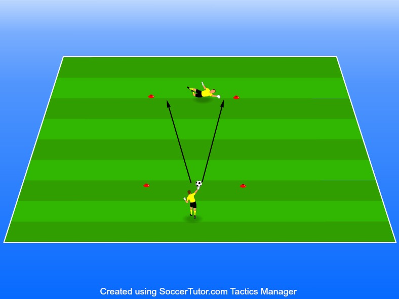

Lära sig hur man ska landa när man slänger sig samt väldigt roligt sätt att tävla
Yta ca 5-10 meters avstånd och
4 koner
2 spelare per uppställning
1 boll
Väldigt lik övningen “nöta” fast med fokus på målvaktsspel. • 1 boll
Till en början så kan barn vara lite rädda för att kasta sig när de spelar fotboll och det är inget konstigt. Därför ska vi successivt introducera de till att bli trygga i rörelsen.
Denna övning kommer därför sätta lite krav på er tränares bedömning av spelarnas förmåga. Rekommenderas därför starkt att nivåindela.
Den som ska rädda i den här övningen börjar på knä och den som har bollen börjar med att rulla ut mot hörnen så att spelarna måste ramla och sträcka på sig för att nå den.
Om ni har barn som känner sig trygga från en stående position kan de börja därifrån.
Därefter så utmanar vi varandra genom att rulla, kasta samt sparka bollen.
Man kan göra detta till en tävling om spelarna uppskattar det.
Se till att alla känner sig trygga på knä innan de får ställa sig upp och slänga sig.
Det är inte bråttom utan detta är även ett sätt att se vilka som är intresserade av den mest utmanande rollen i fotbollen.